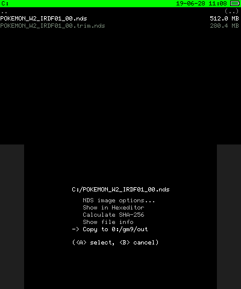
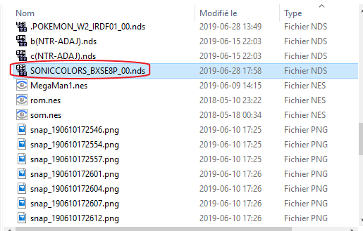
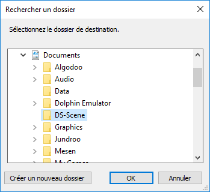
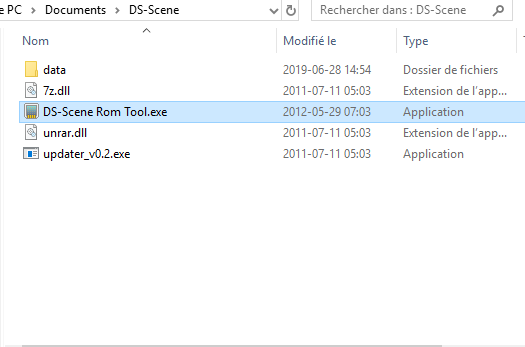
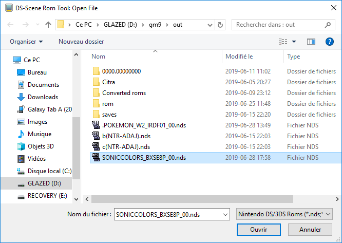
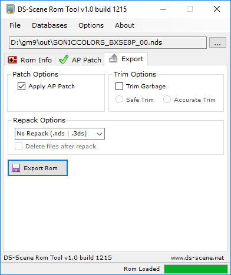
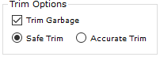
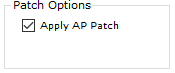
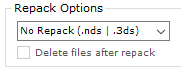

AP-Patching Tutorial
By: GlaZed_Belmont
Hi, in this tutorial, you will learn how to patch nds roms to make them playable in Twilightmenu++. This guide will guide you through dumping your cart to ap patch the rom.
What you will need:
- A hacked 3DS with Luma with GodMode9 (
GodMode9.firminluma/payloads) - DS or DSi enhanced game cartridges. Click here to help identify which type the cart is.
- DS-Scene Rom Tool
- (Optional) xDelta Patcher
{kind=link}
Click here to see if your game requires AP patching or not
Note that you can skip Section I if you've already dumped your cart to an untrimmed format
Section I: Dumping
- Boot your 3DS console while holding the Start button to boot into GodMode9.
If GodMode9 1.8.0 hangs to a splash screen, has blank screen(s), or its just not booting at all, make a copy of the
GodMode9.firmand rename this copy to whatever you'd like, so after that, you will have two .firm files inluma/payloads. - Navigate over
[C:] GAMECARTand press A on it. - Hover your
.ndsNOT your.trim.nds, if you continue this guide with the trimmed rom, you will not be able to ap patch your rom due to the software not recognizing it correctly and press A on it. - Press A on
Copy to gm9/out - Your rom will now be in
SD:/gm9/out


You will most likely be seeing 2 files (trim.nds and .nds)


Section II: Patching
- Find your rom in
SD:/gm9/out - Extract the contents of the 7z of DS-Scene (since the files aren't in a folder, I'd say you make a new folder for them so you dont mix the files with your other stuff.)
- Go to the folder you've extracted the contents to and double click
DS-Scene Rom Tool.exe - You will now be in DS-Scene. DO NOT UPDATE THE AP DATABASE , that will download an outdated version and some games wont be supported anymore.
- Click
File -> Open File...and select the rom that you've dumped.

if you planned to use your sd card at the same time, you can move your rom onto your PC but for the sake of simplicity, I'll keep it there.




Note that the other steps will vary depending if your game has an ap patch available in DS-Scene's database.
If it is supported by DS-Scene:
There would be a on the
AP Patchtab.
- Move to the
Exporttab. - (Optional) Enable
Trim Garbageand thenSafe Trimso the rom will be trimmed in size and be AP patched. - Make sure
Apply AP Patchis enabled. - Don't change the
Repack OptionsNo repack (.nds|.3ds)by default) -
Click on
Export Rom, select where you want to save your rom and clickSave -
Your rom has been AP patched and optionally trimmed.




If it isn't supported by DS-Scene:
By clicking on the
AP Patchtab, you would see this:
-
Download the xDelta Patcher.
-
Check if there is a patch for your rom there
- Open the
xdeltaUI.exe, select your .xdelta patch that you got from the odrive, select your rom and select where you want the patched rom to be saved. - If the patching succeeds, your rom has been AP patched.
If there is one, continue to step 3.
If there isn't one, then either your rom does not need to be AP patched or no patches have been found for your gamr/region. For both of those options, you cannot continue this guide.
DO NOT OVERWRITE YOUR ORIGINAL ROM
If you get any type of errors, please verify that you are using the right patch for your game and region.
Acknowledgements
Thanks to RandalHoffman#0687 for giving me the task to do this guide.
Please join  for further assistance
for further assistance
~  GlaZed_Belmont
GlaZed_Belmont